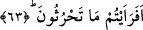
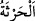
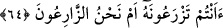

63. Şimdi bana, ektiğinizi haber verin.
Taneli mahsullerden ekerek tarlasını sulamak gibi yaptığınız bir sürü çalışmaları bana
anlatın. Âyet-i kerîmede geçen
(hars) kelimesi toprağı ekmek için hazırlamak ve
tohumu toprağa atmaktır.
64. Onu siz mi bitiriyorsunuz, yoksa bitiren biz miyiz?
“Onu siz mi bitiriyorsunuz,” onu yerden bitip çıkmasını, beslenip büyümesini ve
olgunluk sınırına ulaşan bir bitki hâline gelmesini siz mi sağlıyorsunuz, “yoksa bitiren
biz miyiz?” Elbette siz değilsiniz, bitiren biziz.
Âyet metninde geçen
(zer’) kelimesi, bitkinin bitmesini sağlamak demektir. Bunun
gerçek yönü ise insanın gayret ve çalışmalarıyla değil, Allah’ın emirleriyle ve
sebeplerini yaratmasıyladır. Bu sebeple, tarlayı ekmeye hazırlamak ve tohumu yere
saçmak anlamındaki hars fiili insana nisbet edilirken, bitkiyi yerden bitirmek
anlamındaki zer’ fiili, insanların yapamayacağı bir iş olduğundan, bizzat Allah Teala
zâtına nisbet etmiştir.
Bir hadis-i şerifte: “Sizden biri sakın ekini, bitkiyi ben bitirdim demesin, ben ektim
desin. Çünkü, bitkileri yerden bitiren Allah’tır”[219] buyrulmuştur.
Özet olarak söylemek gerekirse, ekin ekmek insanların işidir. Çünkü, ekme konusunda
insanların bir takım tercihleri ve fonksiyonları vardır. Bitkiyi bitirmek ise yalnız
Allah’a mahsus bir iştir. Çünkü, gerçekten bir tanenin veya başağın bitirilmesinde kulun
hiçbir tercihi olamaz. Bitkinin bitirilmesi kula nisbet edildiğinde bundan bitkinin ekilip
bitirilmesi için toprağı hazır hale getirerek sebeplerini hazırlamak anlamı kasdedilmiş
olur.
el-Es’iletü’l-mukhıme adlı eserde şöyle kaydedilmiştir: Gerek ekme gerekse bitkiyi
bitirme anlamındaki fiiller aynı mânâyadır. Nitekim, Hz. Mûsâ’nın kesilmesini emrettiği
sığır hakkında: “O, henüz boyunduruk altına alınmayan, yer sürmeyen, ekin
sulamayan bir sığırdır” (el-Bakara 2/71) buyrulmuştur. Böyle olunca zer’ fiilinde
olduğu gibi Allah (c.c) hars fiilini de zâtına izâfe etmesi gerekmez miydi? Bu sorunun
cevabı şudur: Hars fiilinin biz insanlara izâfe edilmesi kesb yönüyledir. Allah’a izâfe
edilmesi ise, onu yoktan var edip yaratmasından dolayıdır. Nitekim, “Attığın zaman da
sen atmadın fakat Allah attı” (el-Enfal 8/17) âyetinde de aynı durum geçerlidir.
Halîmî demiştir ki: Yere tohum eken herkesin istiâze çekerek eferaeytüm’den (el-
Vâkıa 56/63) itibaren bel nahnü mahrûmûn’a kadar (el-Vâkıa 56/67) okuması